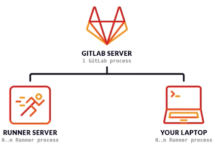

1 GitLab Runner 简介
GitLab Runner 简介
GitLab Runner是一个开源项目，用于运行作业并将结果发送回GitLab0- 与
GitLabCI结合使用，GitLabCI是GitLab随附的用于协调作业的开源持续集成服务。 - GitLab Runner是用Go编写的，可以在Linux, macOS和Windows操作系统上运行。
- 容器部署需使用最新Docker版本。
GitLab Runner需要最少的Docker V1.13.0。 - GitLab Runner版本应与GitLab版本同步。（避免版本不一致导致差异化）
- 可以根据需要配置任意数量的 Runner
GitLab Runner类似于Jenkins的agent，执行CI持续集成、构建的脚本任务。

GitLab Runner 简介
-
作业运行控制：同时执行多个作业。
-
作业运行环境：
- 在本地、使用Docker容器、使用Docker容器并通过SSH执行作业。
- 使用Docker容器在不同的云和虚拟化管理程序上自动缩放。
- 连接到远程SSH服务器。
-
支持Bash, Windows Batch和Windows PowerShell。
- 允许自定义作业运行环境。
- 自动重新加载配置，无需重启。
- 易于安装，可作为Linux, macOS和Windows的服务。
GitLab Runner 类型与状态
类型
- shared共享类型，运行整个平台项目的作业（gitlab)
- group项目组类型，运行特定group下的所有项目的作业（group)
- specific项目类型，运行指定的项目作业（project)
状态
- locked：锁定状态，无法运行项目作业
- paused：暂停状态，暂时不会接受新的作业